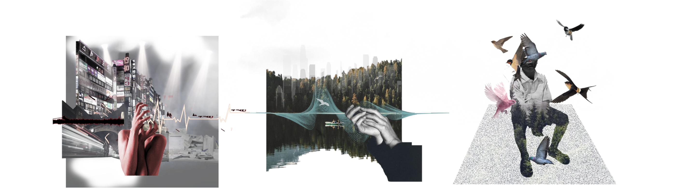

[Time] 2021

Keywords: urban noise, nature sound, sound installation
[Group Work] with Hejun Zhang
[Tutors] Paul Bavister, Felix Faire & Luca Dellatorre
[Time] 2021
+Description
Paralull is a multi-scale installation that sites itself in environmental noise. The work generates public engagement in the noise issues highlighted by the World Health Organization, by smoothly tempering city noise into the most comparable sound found in nature. According to some research on natural sound exposure and the biophilia hypothesis, this transition can relieve people from the sonic annoyance caused by urban noise, and bring with a higher level of relaxation after noise.
The petal-like umbrella is a portable device for everyone to experience noise purification in every corner of city. To help audience focus on the aural perception, the graphic reaction to sound is designed with interactive patterns of diverse transparency, in consideration of the minimal influence of visual and the most intimate connection to the ambience. As an augment of triggered sounds, the change of shadow and light simulates the imagination of natural elements, such as birds, trees and the ocean. Alternatively, each umbrella can be inserted into a trunk station, sharing a stronger shelter of noise on a public scale. With synergetic visual interaction, the novel installation creates an aspirational soundscape for a better urban future.
+Exhibition Film
+Noise Impact

“Excessive noise seriously harms human health and interferes with people’s daily activities at school, at work, at home and during leisure time…” ── WHO
+Natural Cure
With the explosive growth of machine, city soundscape is captured by the racket of tireless engines. As an ecotherapy to urban noise, “forest bathing” is a physiological and psychological exercise to cure the anxiety in modern cities.
+Sound Research

Studies show that most artificial sounds cause psychological anxiety, while nature sounds help people recover faster from the annoyance. Also, the biophilia hypothesis suggests that human possess an innate tendency to seek connections with nature and other forms of life.
+Emotional Transition
A lasting noise will accumulate our tension, and cause the increase of anxiety. Unexpected nature sounds contribute to higher level of relaxation and make us reevaluate the impact of noise.
+Soundscape Tuning
+Metaphor of Shelter
Noise rains everywhere in city. Our project aims to seek a shelter for the downpour of unwanted sounds. The form of Paralull metaphorize an umbrella for noise.
+Design Process
+Audio Morphing Test
+Audio Matching Test

+Acoustic Reflection Test
+Synergetic Visual Test
+PDLC Film Test

PDLC film changes its opacity when the voltage is adjusted. Transparency retains visual connection with the ambience, while opacity represent an objection to the surroundings.
+Key Prototype I
The first key prototype was built with wood stick, umbrellas and LED lights. This version used the breath and revolve of lights of different colors to represent the change of sounds. However, the lights are too distractive for the audience to focus on the auditory experience, and its visibility is a limitation during daytime.
+Key Prototype II
This version was an umbrella made by PDLC films, which took the change of opacity as the patterns for sound reaction. It is an evolution of our previous prototypes and verifies the feasibility of our final production.
+Key Prototype III
Based on the regular umbrella shape, we split the films and made them more organic in shape. This natural form echoes our design focus and is more beneficial for augmenting the perception of nature sounds. Besides, this branch can be attached to a main trunk to build a noise shelter of larger scale.
+Final Form Generation
+Noise Tempering
+Visual Reaction
+Fabrication
+Multiple Scale

+Demonstration

Reference:
[1] Gould van Praag, C. D., Garfinkel, S. N., Sparasci, O., Mees, A., Philippides, A. O., Ware, M., Ottaviani, C., & Critchley, H. D. (2017). Mind-wandering and alterations to default mode network connectivity when listening to naturalistic versus artificial sounds. Scientific reports, 7, 45273. https://doi.org/10.1038/srep45273
[2] Alvarsson, J. J., Wiens, S., & Nilsson, M. E. (2010). Stress recovery during exposure to nature sound and environmental noise. International journal of environmental research and public health, 7(3), 1036-1046.
[3] Wilson, E. O. (1984). Biophilia. Harvard University Press.
[4] Huron, D. (2008). Sweet anticipation: Music and the psychology of expectation. MIT press.